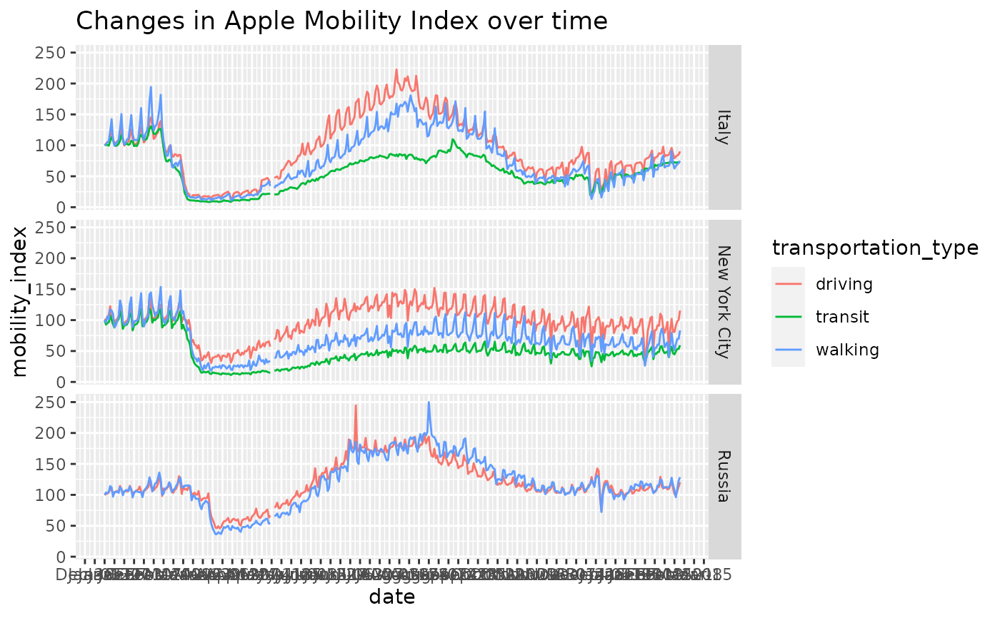
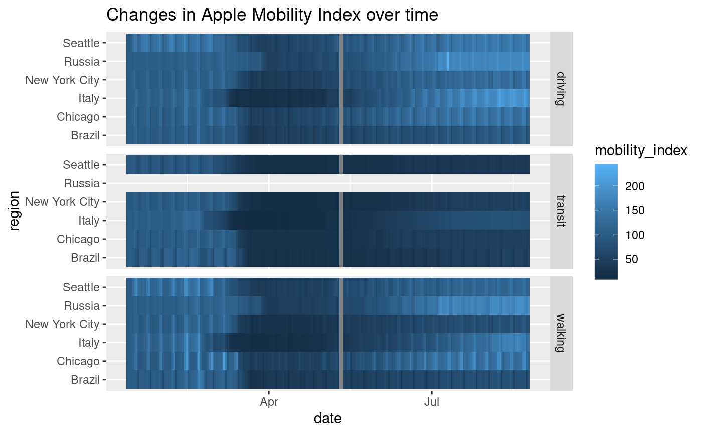
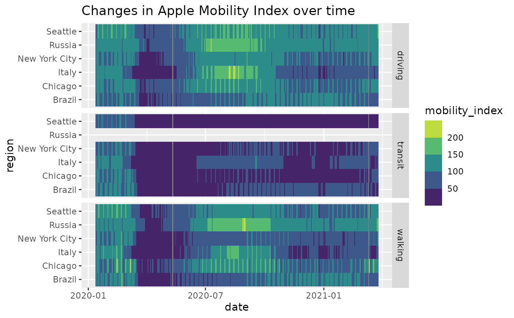

From Apple's website: "Learn about COVID‑19 mobility trends in countries/regions and cities. Reports are published daily and reflect requests for directions in Apple Maps. Privacy is one of our core values, so Maps doesn’t associate your data with your Apple ID, and Apple doesn’t keep a history of where you’ve been."
apple_mobility_data(agree_to_terms = TRUE, max_tries = 3, message_url = FALSE)
| agree_to_terms | logical, when TRUE, implies that the user has agreed to Apple's terms of use. See references and note. |
|---|---|
| max_tries | integer, the number of tries to attempt downloading |
| message_url | logical, output a message with the URL for the day since Apple changes it daily. |
a data.frame
The CSV file and charts on this site show a relative volume of directions requests per country/region or city compared to a baseline volume on January 13th, 2020.
We define our day as midnight-to-midnight, Pacific time. Cities represent usage in greater metropolitan areas and are stably defined during this period. In many countries/regions and cities, relative volume has increased since January 13th, consistent with normal, seasonal usage of Apple Maps. Day of week effects are important to normalize as you use this data.
Data that is sent from users’ devices to the Maps service is associated with random, rotating identifiers so Apple doesn’t have a profile of your movements and searches. Apple Maps has no demographic information about our users, so we can’t make any statements about the representativeness of our usage against the overall population.
These data are available from a URL that changes daily. The parent page is the place to check to see what is going on if there are problems.
Apple requires that all users agree to their terms of use. See https://www.apple.com/covid19/mobility.
Other data-import:
acaps_government_measures_data(),
acaps_secondary_impact_data(),
beoutbreakprepared_data(),
cci_us_vaccine_data(),
cdc_aggregated_projections(),
cdc_excess_deaths(),
cdc_social_vulnerability_index(),
coronadatascraper_data(),
coronanet_government_response_data(),
cov_glue_lineage_data(),
cov_glue_newick_data(),
cov_glue_snp_lineage(),
covidtracker_data(),
descartes_mobility_data(),
ecdc_data(),
econ_tracker_consumer_spending,
econ_tracker_employment,
econ_tracker_unemp_data,
economist_excess_deaths(),
financial_times_excess_deaths(),
google_mobility_data(),
government_policy_timeline(),
jhu_data(),
jhu_us_data(),
kff_icu_beds(),
nytimes_county_data(),
oecd_unemployment_data(),
owid_data(),
param_estimates_published(),
test_and_trace_data(),
us_county_geo_details(),
us_county_health_rankings(),
us_healthcare_capacity(),
us_hospital_details(),
us_state_distancing_policy(),
usa_facts_data(),
who_cases()
Other mobility:
descartes_mobility_data(),
google_mobility_data()
Sean Davis seandavi@gmail.com
#> [1] "geo_type" "region" "transportation_type" #> [4] "alternative_name" "sub-region" "country" #> [7] "date" "mobility_index"#> # A tibble: 6 x 8 #> geo_type region transportation_… alternative_name `sub-region` country #> <chr> <chr> <chr> <chr> <chr> <chr> #> 1 country… Alban… driving NA NA NA #> 2 country… Alban… driving NA NA NA #> 3 country… Alban… driving NA NA NA #> 4 country… Alban… driving NA NA NA #> 5 country… Alban… driving NA NA NA #> 6 country… Alban… driving NA NA NA #> # … with 2 more variables: date <date>, mobility_index <dbl>#> #> driving transit walking #> 1164336 210482 417144require(ggplot2) pl = res %>% dplyr::filter(region %in% c('Russia','New York City','Italy')) %>% ggplot(aes(x=date)) + geom_line(aes(y=mobility_index,color=transportation_type)) + scale_x_date(date_breaks = '1 week', date_labels='%b-%d') + facet_grid(rows=vars(region)) + ggtitle('Changes in Apple Mobility Index over time') plregs_of_interest = c('Seattle', 'New York City', 'Chicago', 'Italy', 'Russia', 'UK', 'Brazil') res %>% dplyr::filter(region %in% regs_of_interest) %>% ggplot(aes(x=date, y=region, fill=mobility_index)) + geom_tile() + facet_grid(rows=vars(transportation_type)) + ggtitle('Changes in Apple Mobility Index over time')res %>% dplyr::filter(region %in% regs_of_interest) %>% ggplot(aes(x=date, y=region, fill=mobility_index)) + geom_tile() + facet_grid(rows=vars(transportation_type)) + scale_fill_viridis_b() + ggtitle('Changes in Apple Mobility Index over time')#>#> #>#> #> #>#> #> #>#> #> #>#> #> #>